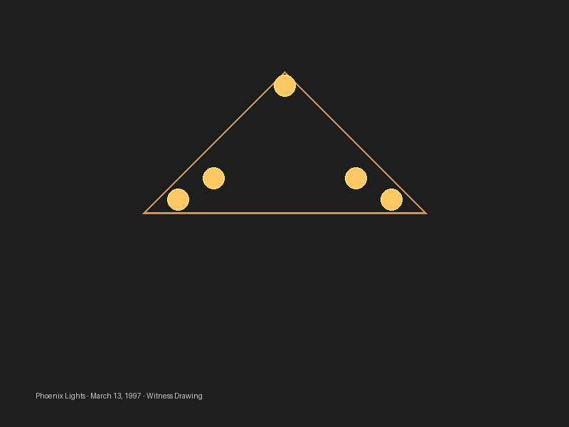
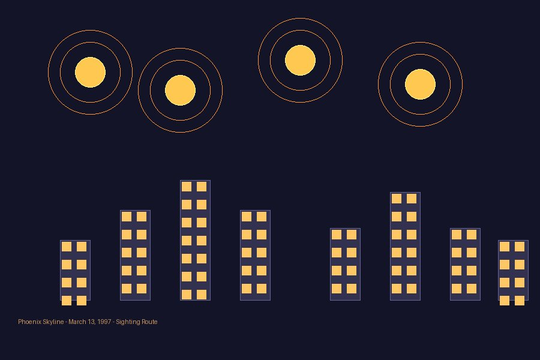

Zusammenfassung
In der Nacht des 13. März 1997 beobachteten über 10.000 Menschen in Arizona und Nevada eine Reihe außergewöhnlicher aeronautischer Phänomene. Das erste Ereignis, gegen 7:30–8:30 PM MST, war ein oder mehrere V-förmige Objekte, die langsam über Nevada und Arizona fliegen. Das zweite Ereignis, gegen 10:00 PM, war eine Reihe orangefarbener, Flare-ähnlicher Lichter, die über Phoenix hingen, bevor sie verschwanden.
Das Militär erklärte später beide Ereignisse als bekannte militärische Aktivität: A-10 Thunderbolt II Kampfjets und LUU-2B/B Illuminierungsfackeln. Jedoch wird die militärische Erklärung bis heute von UFO-Forschern und Zeugen angefochten, da die beobachteten Lichter nicht den erwarteten Mustern von Flares entsprechen würden.


Zeitleiste der Ereignisse
- 7:55 PM MST: Zeuge in Henderson, Nevada, berichtet großes V-förmiges Objekt, das südöstlich reist.
- 8:15 PM MST: Paulden, Arizona berichtet orangerote Lichtcluster. Prescott Valley Sichtungen beginnen.
- 8:30–8:45 PM MST: Formation von Lichtern über Glendale und Scottsdale. Einige Beobachter sahen normale Flugmuster, viele andere beschrieben jedoch eine gewaltige, zusammenhängende Struktur am Himmel.
- ~10:00 PM MST: Zweites Ereignis beginnt: Phoenix-Area berichtet „Reihe brilianter Lichter über Himmel, schwebend oder langsam fallend". Fotos und Videos aufgezeichnet.
- 10:15 PM onwards: Flares sinken und verschwinden hinter Sierra Estrella Gebirgszug südwestlich von Phoenix.
Die militärische Erklärung: A-10 + Flares
Militär-Identifikation: Luftwaffe bestätigte später, dass das 104th Fighter Squadron des Maryland Air National Guard für beide Ereignisse verantwortlich war. Pilot Lt. Col. Ed Jones bestätigte 2007 seine Teilnahme an der Flare-Drop-Übung.
- Flugzeugtyp: A-10 Thunderbolt II in enger Formation
- Flugmuster: Enge Formation, stetige Navigationslichter (keine blink erforderlich für Militär-Flugzeuge)
- Höhe: Hohe Flughöhe, teilweise durch dünne Wolken in Glendale-Area verdeckt
- Dauer erstes Ereignis: ca. 45 Minuten (8:00–8:45 PM)
- Landezeit: Davis-Monthan AFB ~8:45 PM
- Flare-Typ: LUU-2B/B Illuminierungsfackeln (militärische Bezeichnung)
- Brenndauer: 5–6 Minuten pro Flare
- Abstiegsrate: ~6 Fuß pro Sekunde (normal), erhöht auf ~9 Fuß/Sek. durch aufsteigende Wärme
Warum Tausende bis heute an mehr glauben
Gerade weil so viele Menschen dieselbe Nacht erlebt haben, blieb für viele das Gefühl: Hier war mehr los als nur eine Übung. Diese Punkte halten den Fall bis heute lebendig:
- Phoenix-Area ist ~50–70 Meilen entfernt von Davis-Monthan AFB — ob Flares diese Distanz sichtbar machen könnten, war unklar
- Erste Sichtung (V-förmiges Objekt) wurde vom Militär nicht vollständig erklärt
- Viele Zeugen behaupteten, die zweite Lichtreihe schwebte oder sank abnormal langsam für Fallschirm-Flares
- Militär war zunächst nicht öffentlich und erklärte den Fall erst viel später
Sourkraut-Briefing Fazit
Die Phoenix Lights bleiben einer der stärksten Massensichtungsfälle überhaupt. Vielleicht erklärt das Militär einen Teil der Nacht, aber für unglaublich viele Zeugen war da etwas am Himmel, das größer, stiller und seltsamer wirkte als jede normale Erklärung. Genau deshalb lebt der Fall weiter: weil Phoenix nicht wie Einbildung wirkt, sondern wie ein Moment, in dem zu viele Menschen gleichzeitig etwas Außergewöhnliches gesehen haben.